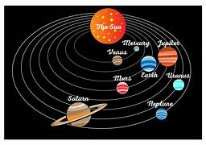
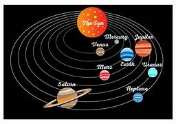

solar system
Our solar system is made up of a star—the Sun—eight planets, 146 moons, a bunch of comets, asteroids and space rocks, ice, and several dwarf planets, such as Pluto.
The eight planets are Mercury, Venus, Earth, Mars, Jupiter, Saturn, Uranus, and Neptune.
Mercury is closest to the Sun. Neptune is the farthest.
Planets, asteroids, and comets orbit our Sun. They travel around our Sun in a flattened circle called an ellipse.
It takes the Earth one year to go around the Sun. Mercury goes around the Sun in only 88 days.
It takes Pluto, the most famous dwarf planet, 248 years to make one trip around the Sun.
Moons orbit planets. Right now, Jupiter has the most named moons—50. Mercury and Venus don't have any moons. Earth has one.
It is the brightest object in our night sky. The Sun, of course, is the brightest object in our daytime sky. It lights up the moon, planets, comets, and asteroids.
planets and ther orbit
 
